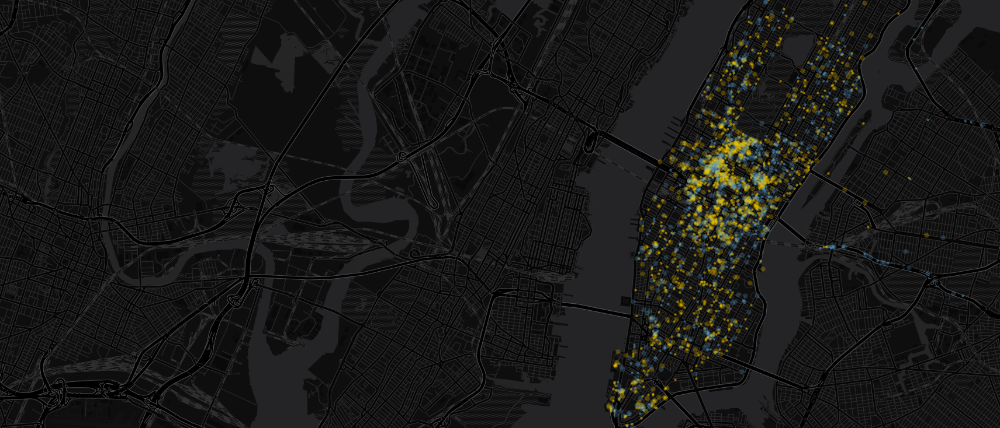
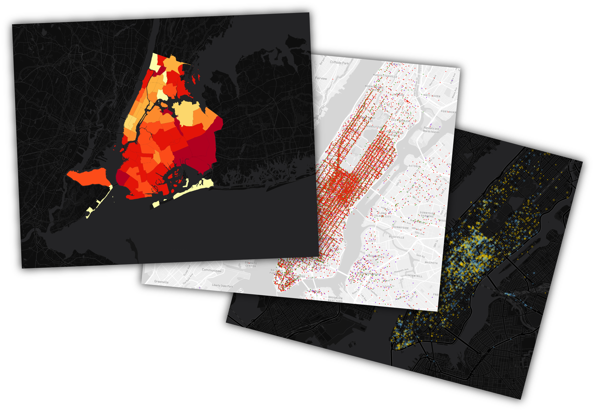
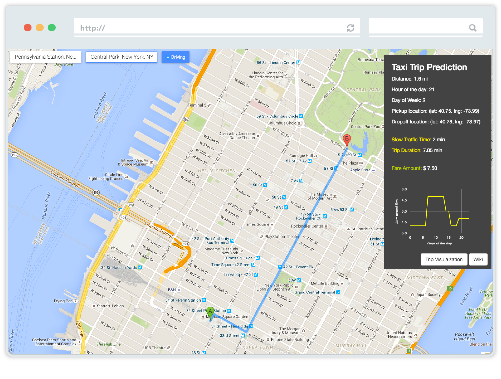
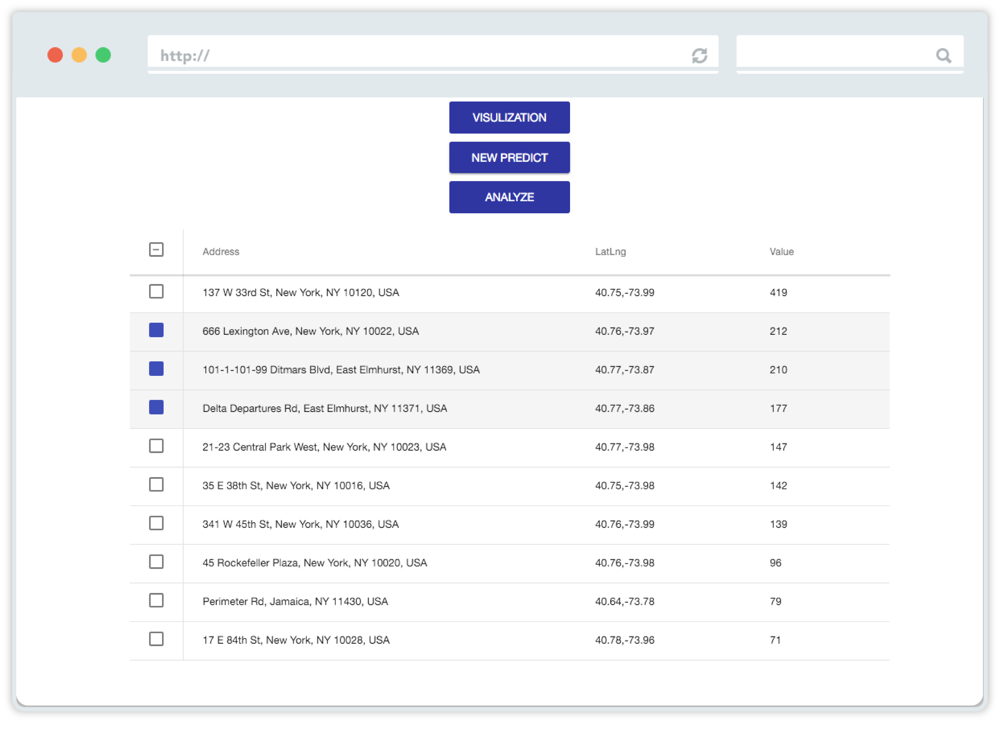

<!--
@license
Copyright (c) 2015 The Polymer Project Authors. All rights reserved.
This code may only be used under the BSD style license found at http://polymer.github.io/LICENSE.txt
The complete set of authors may be found at http://polymer.github.io/AUTHORS.txt
The complete set of contributors may be found at http://polymer.github.io/CONTRIBUTORS.txt
Code distributed by Google as part of the polymer project is also
subject to an additional IP rights grant found at http://polymer.github.io/PATENTS.txt
-->

<link rel="import" href="../../bower_components/polymer/polymer.html">

<dom-module id="landing-page">
  <template>
    <style include="shared-styles">
      :host {
        display: block;
        font-family: "HelveticaNeue-Light", "Helvetica Neue Light", "Helvetica Neue", Helvetica, Arial, "Lucida Grande", sans-serif;
      }
      iron-icon{
        --iron-icon-width: 50px;
        --iron-icon-height: 50px
      }
      img{
        margin: 0;
        width: 100%;
        overflow: hidden;
      }
      .headtitle{
        top: 80px;
        position: absolute;
        width: 100%;
      }
      .subcaption {
        color:rgba(255,255,255,.6);
        font-size: 13px;
        font-stretch: normal;
        font-style: normal;
        font-variant:normal;
        font-weight:400;
        letter-spacing: 2.3px;
        line-height:20px;
        text-transform: uppercase;
      }
      .caption{
        font-size: 44px;
        line-height: 56px;
        letter-spacing: 1px;
        color: #fff;
        font-weight: 300;
      }
      h2{
        font-size: 32px;
        line-height:48px;
      }
      p{
        font-size: 18px;
        line-height: 28px;
        color: #636D72
      }
      h3{
        color: #979EA1;
        font-size:13px;
        line-height: 20px;
        letter-spacing: 2px;
        text-transform: uppercase;
        font-weight: 600;
      }
      #landimage{
        width: 1000px;
        float: right;
      }
      google-youtube{
        width:375px;
        height: auto;
      }
      footer{
        width:100%;
        min-height:60px;
        background-color: #222; /* This color gets inverted color or you can add navbar inverse class in html */
      }
      @media (min-width: 992px) {
        #landimage{
          margin: 0;
          width: 100%;
          overflow: hidden;
        }
        google-youtube{
          width: 1000px;
          height: auto;
        }
      }
    </style>
    <div class="container">

    </div>
    
    <div class="headtitle container">
      <div class="row">
        <div class="col-md-1 col-sm-1"></div>
        <div class="col-md-5 col-sm-6">
          <div class="subcaption">Understanding New York City Traffic</div>
          <div class="caption">Plan and Predict your Business Powered By 1 billion Taxi Trip</div>
          <paper-button on-click="getstartClicked" style="background: white;color: black;margin-top: 30px"> Get Started</paper-button>
        </div>
      </div>
    </div>
    <section style="background-color: rgb(249,249,249)">
      <div class="container">
        <h3 class="text-center">Visulization</h3>
        <h2 class="text-center">Transform taxi data into insight</h2>
        <div class="row">
          <div class="col-md-3"></div>
          <div class="col-md-6">
            <p class="text-center">Transform 1 billion taxi trip information into data-driven maps that enable
              discovery trends and patterns of city traffic to make better decisions.
            </p>
          </div>
        </div>
        <div class="row">
          <div class="col-md-2">
          </div>
          <div class="col-md-8">
            
          </div>
        </div>
      </div>
    </section>
    <section>
      <div class="container">
        <h3 class="text-center">Predict</h3>
        <h2 class="text-center">Predict the duration of a trip</h2>
        <div class="row">
          <div class="col-md-3"></div>
          <div class="col-md-6">
            <p class="text-center">
              Using machine learning for prediction of taxi trip duration and fare amount.
              Find the best time to max your profit.
            </p>
          </div>
        </div>
        <div class="row">
          <div class="col-md-2">
          </div>
          <div class="col-md-8">
            
          </div>
        </div>
      </div>
    </section>
    <section style="background-color: rgb(46,60,67)">
      <div class="container">
        <h3 class="text-center">Plan</h3>
        <h2 style="color: white;" class="text-center">Find the best pickup location</h2>
        <div class="row">
          <div class="col-md-3"></div>
          <div class="col-md-6">
            <p style="color: whitesmoke" class="text-center">
              Using machine learning for prediction of taxi pickup density according to time and whether condition.
              Plan your next move to pick up the next customer.
            </p>
          </div>
        </div>
        <div class="row">
          <div class="col-md-2">
          </div>
          <div class="col-md-8">
            
          </div>
        </div>
      </div>
    </section>
    <section>
      <div class="container">
        <h3 class="text-center">Tech Stack</h3>
        <h2 class="text-center">10 Nodes Cluster powered by spark</h2>
        <div class="row">
          <div class="col-md-3"></div>
          <div class="col-md-6">
            <p class="text-center">Three different data sourrces including TLC taxi data, uber data and whether data. The
              analysis is processed on a 10 nodes cluster using Spark.
            </p>
          </div>
        </div>
        <div class="row">
          <div class="col-md-5">
          </div>
          <div style="margin-bottom: 20px" class="col-md-2">
            
          </div>
        </div>
        <div class="row">
          <div class="col-md-5">
          </div>
          <div style="margin-bottom: 20px" class="col-md-2">
            
          </div>
        </div>
        <div class="row">
          <div class="col-md-5">
          </div>
          <div style="margin-bottom: 20px" class="col-md-2">
            
          </div>
        </div>
      </div>
    </section>
    <section style="background-color: rgb(249,249,249)">
        <div class="container">
          <h3 class="text-center">Video</h3>
          <h2 class="text-center">A quick introduction to smart city traffic</h2>
          <div class="row">
            <div class="col-md-3"></div>
            <div class="col-md-6">
              <p class="text-center">
                Experience with the user interface
              </p>
            </div>
          </div>
          <div style="width: 480px;margin-left: auto;margin-right: auto;margin-bottom: 50px">
            <google-youtube
              video-id="P8sDETqx9oY"
              rel="0"
              start="5">
            </google-youtube>
          </div>
        </div>
    </section>
    <footer class="footer">
      <div class="container">
        <div style="color: whitesmoke;margin-top: 10px;text-align: center">Created by Yutong Pang</div>
      </div>
    </footer>
  </template>

  <script>
    (function() {
      'use strict';
      Polymer({
        is: 'landing-page',
        getstartClicked:function () {
          this.fire("getstartedclicked")
        }
      });
    })();
  </script>
</dom-module>
